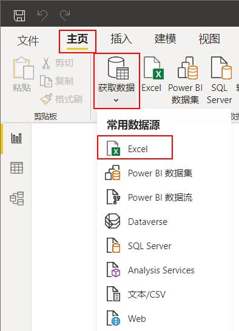
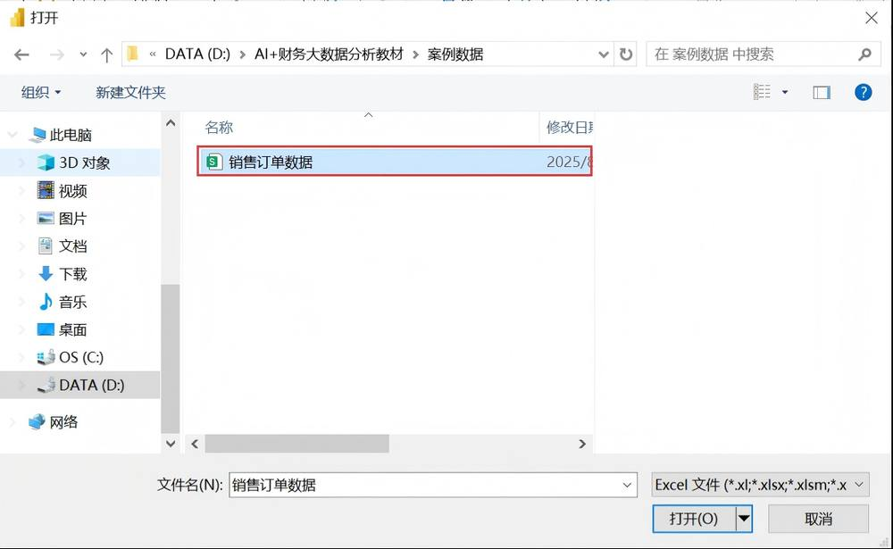
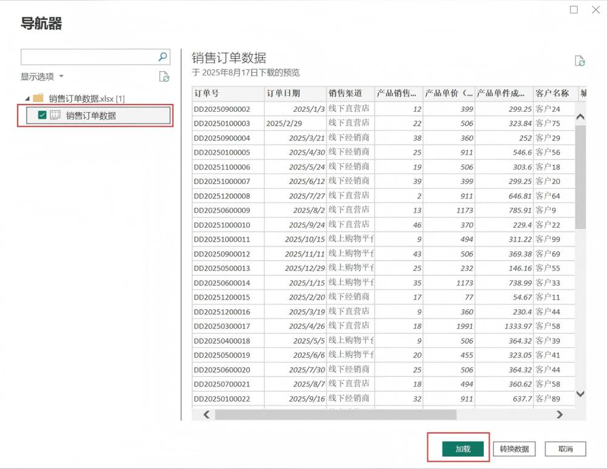
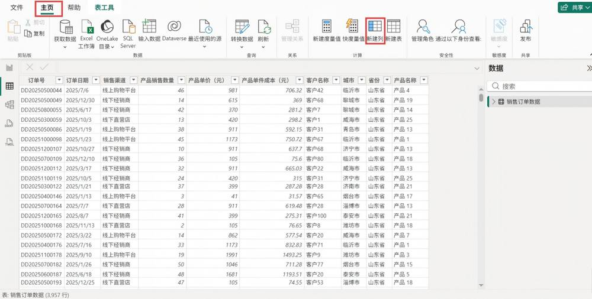
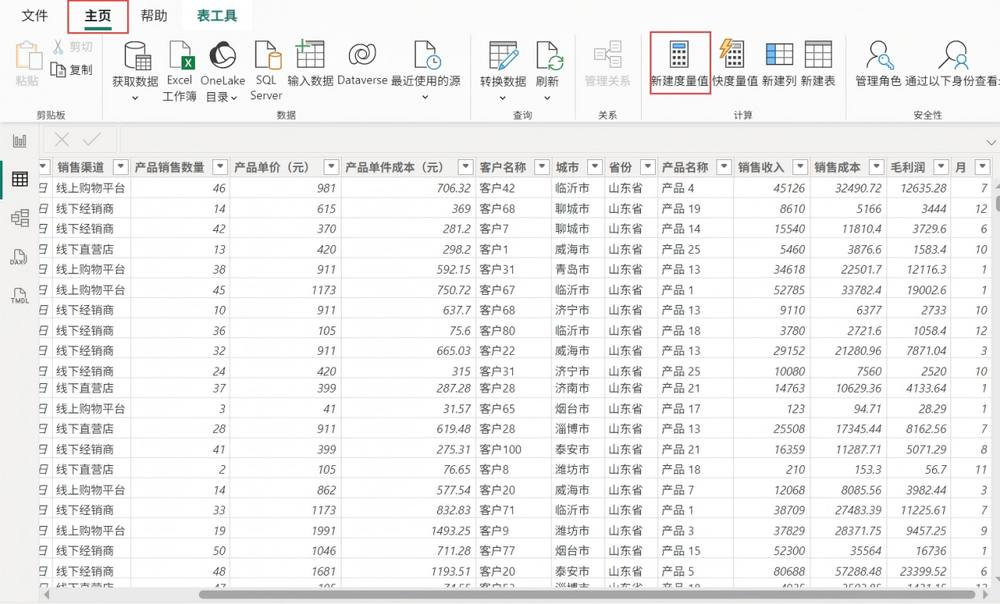

第 1 页 · 项目五

项目五
AI+产品运营大数据分析
从数据到决策：AI赋能产品运营新范式
AI驱动运营洞察 · Power BI可视化 · 智能决策赋能
知识目标
理解产品运营核心分析维度与AI应用底层逻辑
掌握Power BI数据处理、建模与可视化基础操作
能力目标
运用AI技术构建产品运营多维度分析模型
使用Power BI搭建产品运营数据可视化分析看板
素养目标
树立产品运营数据采集与分析的规范意识
强化AI伦理合规认知，提升业务创新实践能力
【备注】大家好，欢迎来到项目五的学习。本次课程主题是“AI+产品运营大数据分析”。我们将从知识、能力、素养三个层面设定清晰的学习目标，旨在帮助大家掌握利用AI进行产品运营分析的核心技能，实现从数据到决策的价值转化。
第 2 页 · AI导学 · 运营分析重塑
AI导学 · 运营分析重塑
AI如何重塑产品运营分析
行业现状与核心痛点
传统分析效率低下
人工整理数据耗时耗力，依赖经验决策，难以发现深层规律
数据价值挖掘不足
海量运营数据沉淀，缺乏工具挖掘隐性价值，信息利用度低
决策缺乏精准支撑
分析滞后于业务发展，无法实时预警，运营策略调整被动
AI驱动模式变革
从“经验驱动”转向“数据智能驱动”，重塑分析与决策流程
AI重塑运营分析的核心逻辑与价值
| 核心维度 | AI技术应用方式 | 业务价值与落地成果 |
| 智能数据处理 | 自动化清洗与整合 | 打破数据孤岛，将数据准备效率提升80%，释放人力聚焦分析 |
| 非结构化数据解析 | 挖掘评论、语音、图片中的情感与需求，还原用户真实声音 | |
| 全链路数据关联 | 打通用户行为、交易、服务数据，构建完整的用户画像与业务闭环 | |
| 智能决策支持 | 预测性分析模型 | 精准预测用户增长、销量趋势及流失风险，提前制定应对策略 |
| 智能归因与诊断 | 自动识别影响转化、留存的关键因子，精准定位运营优化点，告别“拍脑袋”决策 |
项目核心目标与能力提升
掌握AI分析工具与模型
熟练运用AI技术构建分析体系，实现从数据到洞察的高效转化
培养数据驱动决策思维
建立以数据为核心的运营逻辑，学会用数据验证假设、指导行动
赋能业务增长与价值落地
将分析结果转化为可落地的运营策略，真正驱动产品与业务增长
【备注】在正式开始之前，我们先了解一下AI是如何重塑产品运营分析的。传统分析模式效率低下，而AI技术能帮助我们从海量数据中快速挖掘价值。本项目的核心，就是通过真实案例，培养大家利用AI进行高效分析和决策的能力。
第 3 页 · Task 01 · A公司产品运营分析任务
Task 01 · A公司产品运营分析任务
A公司2025年产品运营深度分析
项目背景与核心分析目标
企业背景
专注新能源汽车零部件国家级高新技术制造企业
数据范围
2025全年销售/财务/库存渠道与客户全量业务数据
核心维度
营收/利润/渠道分布区域表现与产品结构分析
分析价值
精准评估市场表现优化运营策略，提升盈利
核心分析问题与洞察方向
| 分析维度 | 关键分析问题 | 核心数据来源 |
| 营收洞察 | 全年营收总额？月/季波动？哪些省份/区域贡献最高？ | 销售ERP系统财务销售报表 |
| 利润结构 | 整体毛利率水平？哪个渠道/产品利润贡献最高？ | 财务总账系统产品成本明细表 |
| 客户价值 | 采购额TOP10客户是哪些？客户流失率与复购情况？ | CRM客户系统销售订单数据库 |
| 产品表现 | 哪些产品销量最高/滞销？产品生命周期处于何阶段？ | 库存管理系统销售出库明细 |
分析执行与成果落地保障
数据清洗与校验
对原始销售、财务数据进行去重、补全及逻辑校验，确保数据准确一致，夯实分析基础。
多维交叉验证
结合行业趋势、竞品数据与内部业务逻辑进行交叉验证，避免单一视角偏差，提升结论可靠性。
策略落地跟进
将分析结论转化为可执行的运营动作，设定量化KPI指标，建立定期复盘机制并动态优化。
【备注】为了让大家更好地理解，我们将通过一个具体的案例来展开学习。我们将扮演A公司的产品数据分析师，这家公司专注于新能源汽车零件业务。我们的任务是基于它2025年的数据，回答屏幕上列出的这些核心问题，从营收、利润、客户和产品四个关键维度进行深度剖析，并最终形成可落地的运营优化方案。
第 4 页 · 01

01
TASK 01 · 任务一
AI驱动的产品运营分析
从理论到模型，构建系统化的数据分析框架，将抽象的业务场景转化为可量化的运营指标体系，为产品增长与用户价值挖掘提供坚实的数据支撑。
运营分析基础认知体系
深度解析产品运营的四大核心维度：销售收入、客户价值、产品表现与价格策略，建立完整的业务分析底层逻辑。
AI驱动的分析模型搭建
掌握利用AI工具将业务问题转化为结构化分析模型的方法，实现从数据采集、清洗到智能洞察的全流程自动化构建。
【备注】现在我们进入任务一：AI驱动的产品运营分析。在这个任务中，我们将首先学习产品运营分析的四大基础维度，然后学习如何利用AI工具，将这些理论知识转化为一个可执行的分析模型。
第 5 页 · Task 01 · Product Operation Analysis
Task 01 · Product Operation Analysis
产品运营分析基础认知
四大核心分析维度
销售收入分析
聚焦营收总额与增长率，通过同比、环比及趋势模型把握业务发展态势
客户维度分析
运用“二八原则”与RFM模型识别高价值客群，实施分层精细化运营策略
产品维度分析
借助波士顿矩阵划分产品类型，科学配置资源，优化产品组合与迭代方向
价格维度分析
基于价格弹性研究需求变动，结合竞品与成本，支撑定价、调价及促销决策
运营分析核心应用体系
| 分析维度 | 核心工具与方法论 | 业务价值与应用目标 |
| 营收分析 | 同比/环比分析、趋势预测模型、漏斗分析 | 实时监控业务健康度，预判增长拐点，为业绩目标制定与复盘提供数据支撑 |
| 客户洞察 | 二八法则、RFM模型、用户画像标签体系 | 锁定核心高价值客群，针对性设计运营策略，提升用户留存、复购与生命周期价值 |
| 产品规划 | 波士顿矩阵、产品生命周期、功能渗透率分析 | 优化资源配置优先级，淘汰低效产品，打造明星爆款，平衡产品组合的收益与风险 |
| 定价策略 | 价格弹性系数、竞品定价监测、成本加成模型 | 平衡利润空间与市场销量，制定最优定价方案，通过价格杠杆调节供需与产品竞争力 |
运营分析的常见挑战与应对思路
数据孤岛与碎片化
打通业务系统数据壁垒，建立统一数据仓库，实现全链路数据实时整合
分析滞后与被动响应
搭建自动化报表与预警体系，从“事后分析”转向“事中监控与事前预判”
分析与业务脱节
以业务问题为导向开展分析，输出可落地的策略建议，而非单纯的数据罗列
【备注】产品运营分析主要包含四个基础维度。收入分析关注公司营收状况；客户分析依据二八原则识别核心客户；产品分析借助波士顿矩阵优化产品组合；价格分析则通过研究价格弹性来支持定价决策。
第 6 页 · Task 01 · 产品运营分析模型构建
Task 01 · 产品运营分析模型构建
运用AI构建产品运营分析模型
全链路分析模型闭环架构
数据层
整合销售/成本/客户/渠道全量数据
处理层
清洗去噪与标准化，统一指标口径
分析层
六维拆解：时间/地域/渠道/产品/客户
输出层
可视化看板与智能洞察报告输出
模型落地与持续优化保障
指标体系动态校准
定期复盘指标定义，确保业务口径与数据计算逻辑一致，消除统计偏差。
策略闭环执行监控
建立从分析结果到策略执行的跟踪机制，验证优化效果并及时修正方向。
数据质量长效治理
持续监控数据源质量，清理异常值与缺失数据，保障模型输入的可靠性。
【备注】构建分析模型至关重要。我们可以通过向AI输入清晰的指令，快速生成一个专业的分析模型。这个模型遵循“数据输入-处理-分析-输出-决策”的核心逻辑，并设计了持续优化的闭环，非常科学和完整。
第 7 页 · Task 03 · AI-Guided Visualization Strategy
Task 03 · AI-Guided Visualization Strategy
产品运营分析模型迭代优化
AI导训：分析场景与图表匹配指南
对比类分析（排名/高低）
优选条形图，直观呈现数值排序与差距，快速识别头部优势与尾部短板。
趋势类分析（时间维度）
组合折线图+柱形图，兼顾趋势走向与数值对比，还原数据随时间的动态演变。
地域分布分析
地图热力+条形图联动，既展示地理密度梯度，又明确各区域的具体数值排名。
核心指标监控
使用指标卡+仪表盘，突出关键KPI实时状态，强化运营健康度的视觉焦点。
多维度运营分析场景适配矩阵
| 分析维度 | 典型应用场景 | 推荐可视化方案与价值 |
| 用户洞察 | 用户分层 / 活跃度TOP排行 | 漏斗图+RFM模型矩阵：清晰呈现用户从获客到转化的流失节点，结合价值分层定位高潜用户，辅助精细化运营策略制定。 |
| 用户留存 / 复购周期 | 留存曲线+环形图：展示不同周期的用户留存衰减趋势，对比新老客复购占比，评估产品粘性与用户生命周期健康度。 | |
| 业务效能 | 渠道流量 / 转化对比 | 分组柱状图+ROI热力图：多维度对比各渠道的引流能力与转化效率，量化投入产出比，为预算分配和渠道优化提供依据。 |
| 产品结构 / 活动复盘 | 树状图+转化率漏斗：展示产品品类的贡献度结构，结合活动全链路漏斗分析，评估活动对用户增长和销售转化的实际拉动效果。 |
AI驱动可视化的核心价值
决策效率跃升
AI自动匹配最优图表，减少80%的图表制作耗时，让团队聚焦业务决策而非工具操作。
数据认知降维
通过可视化降低数据理解门槛，让非技术岗快速掌握业务现状，实现全员数据驱动。
洞察深度强化
多图表联动挖掘数据关联，从单纯的“看数据”升级为“懂数据”，发现隐性增长机会。
【备注】有了分析模型，下一步就是将结果可视化。AI同样可以帮助我们，为不同类型的分析问题推荐最合适的图表。比如，对比排名用条形图，看时间趋势用组合图，展示地域分布用地图等等。这能让我们的分析结果更加直观易懂。
第 8 页 · 02

02
TASK 02 · 任务二
Power BI产品运营可视化
从理论到实践，亲手打造可视化看板，将分散的业务数据转化为直观的运营决策依据，掌握数据驱动业务增长的核心方法。
数据采集与加工
学习从Excel导入数据，掌握数据清洗、转换与计算的核心技巧，处理缺失值与异常值，为可视化分析打好坚实基础。
运营看板可视化搭建
掌握柱状图、折线图、矩阵表等图表制作，构建多维度运营看板，实现用户、营收、活跃度等指标的实时监控与分析。
【备注】理论学习结束，现在我们进入任务二：Power BI产品运营可视化。在这个任务中，我们将亲手操作，学习如何从Excel文件中获取数据，进行加工处理，并最终将其转化为一个直观、强大的可视化看板。
第 9 页 · Task 01 · Data Acquisition
Task 01 · Data Acquisition
Power BI 数据采集实操
Excel 数据源接入全流程解析
| 步骤 | 操作执行路径 | 核心操作说明 |
| 01 获取数据 | 主页 → 获取数据 → Excel | 在Power BI首页功能区，点击“获取数据”下拉菜单，选择Excel作为数据源类型。 |
| 02 选择文件 | 浏览路径 → 选中文件 → 打开 | 在系统文件浏览器中定位到“销售订单数据.xlsx”，选中后点击“打开”。 |
| 03 加载数据 | 导航器选表 → 加载数据 | 勾选目标工作表，预览数据无误后点击“加载”，完成数据导入模型。 |
实操界面关键节点演示

01 数据源入口
Power BI 首页核心功能区，快速唤起 Excel 数据导入向导的关键入口，支持多种数据源类型。

02 目标文件选择
通过系统文件浏览器，精准定位并选中待导入的“销售订单数据.xlsx”文件，支持本地及网络路径。

03 数据预览与加载
导航器中实时预览表结构与数据内容，确认无误后执行加载，数据将自动进入模型。
关键注意事项
格式规范校验
避免合并单元格与空行，确保表头清晰规范。
字段类型识别
检查日期、数值等字段的自动识别是否正确。
增量与刷新机制
支持手动或配置自动刷新，保持数据时效性。
【备注】实战的第一步是数据采集。我们将使用Power BI从Excel文件中获取数据。大家可以看到屏幕上的操作步骤和对应的截图，非常简单，只需要点击“获取数据”，选择Excel文件，然后加载即可。在实际操作中，要特别注意Excel文件的格式规范，避免因合并单元格或不规范的表头导致数据加载异常。加载完成后，还需要检查系统对字段类型的识别是否正确，为后续的数据分析打好基础。
第 10 页 · Task 02 · Data Processing & Calculation
Task 02 · Data Processing & Calculation
数据加工：构建核心指标体系
核心指标计算逻辑与DAX公式应用
新建列：基础指标衍生
计算收入、成本、利润，完善字段
时间解析：构建分析轴
提取订单月份/季度，支持趋势分析
度量值：动态聚合分析
DAX计算毛利率，支持多维钻取
数据校验：质量保障
验证逻辑一致性，确保结果准确

01. 新建列：丰富基础数据维度
基于原始交易记录，通过DAX公式计算销售收入、销售成本、毛利润等关键字段，将分散的基础数据转化为可直接用于分析的业务指标；同时利用MONTH函数从订单日期中提取月份信息，为后续的时间序列分析构建基础。

数据加工的业务价值与应用场景
夯实分析底座，补齐数据短板
通过计算衍生指标，补充原始数据中缺失的业务逻辑字段，将零散的交易记录转化为结构化的指标体系，为后续的多维度经营分析提供完整、可靠的数据支撑。
动态聚合计算，适配灵活分析
度量值支持按时间、产品、客户等维度实时聚合，无需重复建模即可实现分析，满足管理层对不同粒度、不同视角的经营数据查询与下钻需求。
量化经营成果，驱动科学决策
精准的毛利、毛利率等指标，帮助业务快速识别高盈利产品与成本管控痛点，为定价策略优化、供应商管理及库存周转改善提供数据化的决策依据。
【备注】数据加载后，我们需要对其进行加工。通过“新建列”和“新建度量值”功能，使用DAX公式计算出销售收入、毛利润、毛利率等关键指标，并提取出订单日期中的月份，为后续的分析做好准备。
第 11 页 · Task 03 · 运营看板可视化设计
Task 03 · 运营看板可视化设计
数据可视化看板——运营全景洞察
核心指标与趋势监控
关键指标卡片——经营总览
以醒目卡片形式展示销售收入、销售成本、毛利润、毛利率等核心财务指标，实时刷新，快速掌握企业经营基本面。
组合趋势图——营收利润走势
采用柱状图+折线图组合形式，清晰展示月度销售收入与毛利润的动态变化，直观洞察业绩增长趋势与周期性波动规律。
多维拆解与结构分析
排行与结构——客户与产品透视
通过簇状条形图呈现客户营收TOP排名，利用树状图拆解各产品线的收入贡献占比，精准锁定核心客户与高价值产品。
区域与渠道——市场格局分析
饼图展示各省份收入占比，散点图对比城市营收与利润表现，环形图解析线上线下渠道的毛利贡献结构，辅助市场布局优化。
看板核心应用价值与场景
| 分析场景 | 业务价值与决策支持 |
| 经营实时监控 | 实时掌握营收、成本及利润动态，自动预警数据异常，为管理层提供即时决策依据，避免经营风险。 |
| 客户价值挖掘 | 量化客户贡献度与偏好特征，支撑客户分层运营策略，精准定位高价值客户，提升客户留存与复购率。 |
| 产品策略优化 | 分析各产品线盈利性与市场表现，优化产品组合与资源倾斜，助力新品研发决策与滞销品的清退管理。 |
| 渠道效能评估 | 对比各渠道的毛利贡献、获客成本与转化效率，科学调整渠道布局与资源投入，最大化渠道整体产出效益。 |
【备注】数据准备就绪，现在我们进入最激动人心的可视化环节。我们的目标是构建一个像这样的综合看板。这个看板整合了我们之前讨论的所有分析维度，包括关键指标、时间趋势、客户排名、产品构成等等，让数据一目了然。
第 12 页 · Step 01 · Visualization Construction
Step 01 · Visualization Construction
可视化实现步骤：核心指标与趋势分析
01 创建关键指标卡片图
拖拽数值字段生成卡片，直观展示营收、成本、毛利及毛利率等核心经营KPI，快速概览业绩。
02 构建月度趋势组合图
X轴设为月份，双Y轴分别关联销售收入（列）与毛利润（行），清晰呈现规模与盈利的联动趋势。
03 制作客户营收排行图
以客户名称为分类维度，通过簇状条形图直观对比各客户销售收入贡献度，快速识别头部客户。
图表配置与字段映射关键
核心字段与图表类型的精准匹配
●卡片图映射：直接关联数值型字段（如销售收入），无需分类轴，聚焦单一指标的数值展示。
●组合图映射：时间维度（月）为X轴，配置双Y轴分别承载规模（营收）与效益（毛利）两类数据。
●条形图映射：分类维度（客户名称）为Y轴，数值维度（营收）为X轴，通过条形长度直观呈现排名。
实操优化与可视化建议
拖拽式快速生成
无需复杂配置，拖拽字段至画布，系统自动推荐最优图表，高效完成基础搭建。
双轴刻度适配
针对不同量级数据，调整双轴最大值与最小值，避免因数值差异导致趋势被压缩。
排序强化对比
条形图建议按数值降序排列，突出头部客户贡献，同时可启用数据标签增强可读性。
动态交互联动
添加“月份”或“区域”切片器，实现全看板图表联动筛选，灵活查看不同维度数据。
【备注】看板的构建是一步步完成的。首先，我们创建卡片图来展示核心KPI。然后，创建组合图来分析月度销售和利润趋势。接着，用簇状条形图来展示客户销售收入的排名。每一步都很简单，主要是拖拽字段并进行简单的设置。
第 13 页 · Task 02 · Data Visualization Implementation
Task 02 · Data Visualization Implementation
可视化实现步骤 (2/2)
关键图表构建与交互设置
04 树状图：产品营收构成
以“产品名称”为类别，“销售收入”为值，直观拆解产品维度的营收占比结构。
05 饼图：省份业绩分布
将“省份”设为图例，统计各区域销售收入占比，快速掌握全国市场的区域格局。
06 散点图：城市效益关联
X轴映射“毛利润”，Y轴映射“销售收入”，挖掘城市维度下规模与利润的关联。
07 环形图：渠道毛利对比
按“销售渠道”分组展示“毛利润”，直观对比不同渠道的盈利贡献与价值差异。
看板交互增强与最终交付
08 切片器：动态时间筛选
创建“月份”切片器，实现所有图表的实时联动，支持按时间维度动态筛选数据，提升看板交互性。
标题与布局：视觉优化
插入并美化看板主标题，调整各图表间距与对齐方式，优化配色与字体，确保信息层级清晰。
验收测试：逻辑校验
验证切片器筛选逻辑，检查数据刷新准确性，确保多图表联动一致，完成看板最终交付。
【备注】继续完成看板的构建。我们用树状图展示产品构成，用饼图分析省份分布，用散点图观察城市表现，用环形图对比渠道毛利。最后，创建一个月份切片器实现联动筛选，并添加标题。这样，一个完整的看板就完成了。
第 14 页 · 03

03
TASK 03 · 任务三
AI辅助产品运营分析汇报
从洞察到行动，让数据产生价值，将冰冷的数据转化为可落地的业务决策与增长动力，赋能产品运营提效增质。
看板数据解读
学习从可视化看板中提取核心结论，精准回答业务关键问题，挖掘数据背后的业务逻辑与趋势洞察。
AI辅助PPT生成
基于业务数据洞察，利用AI工具快速生成汇报大纲，优化内容结构与呈现逻辑，提升运营汇报的效率与专业度。
【备注】现在我们进入任务三：AI辅助产品运营分析汇报。在这个任务中，我们将学习如何解读我们亲手制作的看板，从中提取有价值的洞察，并基于这些洞察，利用AI快速生成汇报大纲。
第 15 页 · 看板解读 · 核心指标洞察
看板解读 · 核心指标洞察
看板数据解读——六大维度核心结论
整体经营业绩
2025年营收达9337.6万元，整体毛利率30.02%，盈利水平稳健，营收规模符合年度预期目标。
时间趋势特征
营收与毛利峰值均出现在3月，4月营收触底、9月毛利最低，呈现显著的季节性波动规律。
核心客户表现
营收贡献TOP3为客户54、44、95，头部客户集中度较高，是营收基本盘的关键支撑力量。
明星产品矩阵
产品2、3、5稳居营收前三，构成公司核心利润来源，市场接受度与盈利能力表现突出。
区域市场格局
山东省、江苏省、广东省位列省份营收前三，华东与华南地区为业绩增长的核心引擎。
渠道利润贡献
线下经销商、线上购物平台、线下直营店为毛利前三渠道，全渠道协同发展格局初步形成。
核心洞察总结
●业绩基本面稳固：核心产品与头部客户构筑了坚实的营收基础，华东华南市场壁垒深厚，毛利率保持在健康区间。
●运营优化空间：需针对季节性低谷期（4月、9月）制定专项引流策略。
五大运营优化建议
平抑季节波动
低谷期推组合促销，高峰前置备货保供
深耕核心区域
鲁苏粤增设体验店，强化本地化服务
升级明星单品
迭代产品2/3/5，联动头部客户定制营销
全渠道提效
线上优化运营，线下强化经销商赋能
拓展客户生态
TOP客户增值服务，挖掘中小客户增量
【备注】看板制作完成后，我们就可以从中解读出大量有价值的信息。比如，公司2025年总销售收入约9300万，毛利率30.02%。3月是收入和利润的高峰。山东、江苏、广东是前三大收入省份。这些结论直接回答了我们最初提出的业务问题。
第 16 页 · AI导训 · 输出（PPT大纲示例）
AI导训 · 输出（PPT大纲示例）
AI辅助PPT生成：从数据洞察到演示文稿
AI赋能PPT生成全流程
Step 1 数据洞察提取
从经营数据中提炼营收、毛利、客户价值等核心维度的关键结论
Step 2 AI智能生成大纲
输入关键结论，AI自动梳理逻辑清晰、重点突出的结构化PPT大纲
Step 3 一键生成演示文稿
基于大纲自动匹配专业版式与可视化图表，快速产出汇报PPT
核心经营分析维度与洞察
01
经营与客户价值
全年营收9.3亿，毛利率稳超30%；TOP3客户贡献超4400万，头部价值显著。
02
产品与区域版图
明星产品矩阵合揽2.84亿收入；鲁苏粤稳居区域营收前三，构成核心增长极。
03
渠道与策略方向
线下经销商毛利占比居首；需聚焦高毛利城市与渠道，平衡季节波动差异。
关键洞察与行动建议
| 洞察维度 | 关键数据表现 | 行动策略与价值 |
| 营收与利润 | 营收9.3亿，毛利率>30%，三月收入达峰值 | 针对旺季提前备货，优化库存周转，巩固利润基本盘 |
| 客户与产品 | 头部客户贡献突出，明星产品收入占比超3成 | 深化头部客户服务，加大明星产品资源倾斜，提升营收集中度 |
| 区域与渠道 | 鲁苏粤领跑全国，线下渠道毛利贡献居首 | 复制高潜区域模式，优化线下渠道激励机制，扩大区域增长极 |
| 综合策略 | 季节与区域差异并存，高毛利渠道是破局关键 | 实施差异化区域运营，平衡淡旺季产能，预计增效超千万 |
【备注】基于这些数据洞察，我们可以利用AI工具快速生成一份专业的PPT汇报大纲。AI能够将我们的分析结论，自动提炼和组织成逻辑清晰、重点突出的演示文稿结构，大大提升我们的工作效率。
第 17 页 · 课程总结

课程总结
从理论到实践的完整闭环
以数据与AI赋能产品运营分析全流程
全面掌握产品运营分析核心体系，融合AI工具与数据思维，实现从理论认知到业务落地的进阶
核心知识构建
掌握产品运营分析四大核心维度，深入理解AI在运营决策中的辅助赋能作用，夯实理论认知基础。
核心技能习得
熟练运用Power BI完成数据采集、清洗加工与可视化呈现，打造专业的运营数据分析与落地实操能力。
核心思维重塑
树立“数据驱动决策”的运营理念，掌握人机协同工作模式，用数据洞察驱动业务增长与策略优化。
感谢聆听 · 课程总结完毕
【备注】好了，我们来总结一下今天的课程。我们学习了产品运营分析的四大维度，理解了AI的辅助作用，并掌握了使用Power BI进行数据可视化的全套技能。更重要的是，我们树立了数据驱动决策的理念，并学会了如何与AI协同工作。